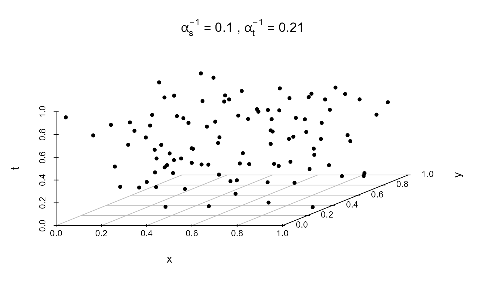

R/Simulate_ST_DPP.R
rstDPP.RdGenerates a realization of a spatio-temporal determinantal point process (DPP)
using a user-defined spectral density model.
The function supports both separable (model = "S") and non-separable
(model = "NS") dependence structures and allows for either exponential
or Mat\'ern-type spectral densities.
The simulation is performed on a 3D spatio-temporal frequency grid and can
incorporate user-specified intensity functions for thinning.
Character. Type of dependence model:
"Stationary"A homogeneous spatio-temporal DPP is generated.
"Inhomogeneous"A non-homogeneous spatio-temporal DPP is generated.
Character. Type of dependence model:
"S"Separable spatio-temporal covarince function model, where space and time components are separable.
"NS"Non-separable spatio-temporal model, allowing interaction between space and time.
Character. Type of spectral density function to use:
"exp" for exponential spectral form or "matern" for a Mat\'ern-type spectral model.
Numeric. Spatial decay or range parameter in the spectral density.
Numeric. Temporal decay or range parameter in the spectral density.
Numeric. The maximum intensity value used for thinning. Must be specified.
Numeric. Smoothness parameter for the Mat\'ern-type spectral density
(only relevant if spectral = "matern"). Default is 2.
Numeric. Degree of separability for the Mat\'ern model:
eps = 0 corresponds to full non-separability,
eps = 1 yields complete separability,
and intermediate values provide partial separability.
Optional. Intensity function lambda_s(u, t) for separable models.
If not provided, a default function is used.
Optional. Intensity function lambda_non_s(u, t) for
non-separable models. If not provided, a default function is used.
Numeric. Half-width of the spatio-temporal frequency grid.
The total grid size is (2 * grid_size + 1)^3.
A numeric matrix with three columns (x, y, t) representing
the retained spatio-temporal events after thinning.
This function implements a spectral simulation method for spatio-temporal DPPs, following the theoretical framework introduced in Vafaei et al. (2023) and Ghorbani et al. (2025).
The algorithm proceeds as follows:
Construct a 3D grid of spatial and temporal frequency components \((\omega_x, \omega_y, \tau)\).
Evaluate the chosen spectral density \(\phi(\omega, \tau)\) across the grid.
Use the resulting spectral values as eigenvalues to simulate a realization of a DPP via \(spatstat.model::rdpp()\).
Optionally apply thinning using a user-defined intensity function
\(\lambda(u, t)\), scaled by lambda_max, to induce inhomogeneity.
Two spectral families are supported:
Exponential form: $$ \phi(\omega, \tau) \propto \exp\left[-(\pi \alpha_s |\omega|)^2\right] \left(1 + 4 (\pi \alpha_t \tau)^2\right)^{-1}. $$
Mat\'ern-type form: $$ \phi_{\epsilon}(\omega, \tau) \propto \left( \alpha_s^2 \alpha_t^2 + \alpha_t^2 |\omega|^2 + \alpha_s^2 \tau^2 + \epsilon |\omega|^2 \tau^2 \right)^{-\nu}, $$ where \(\epsilon \in [0, 1]\) determines the degree of separability between space and time.
This framework enables simulation of spatio-temporal point patterns that exhibit varying degrees of spatial–temporal dependence, providing a versatile tool for evaluating separability tests and modeling non-separable dynamics.
Vafaei, N., Ghorbani, M., Ganji, M., and Myllymäki, M. (2023). Spatio-temporal determinantal point processes. arXiv:2301.02353.
Ghorbani, M., Vafaei, N., and Myllymäki, M. (2025). A kernel-based test for the first-order separability of spatio-temporal point processes. TEST, 34, 580-611. https://doi.org/10.1007/s11749-025-00972-y
plot_stpp for visualizing spatio-temporal point patterns.
# \donttest{
# Simulate a stationary separable Mat\'ern ST-DPP
if (requireNamespace("spatstat", quietly = TRUE)) {
sim <- rstDPP(
mode = "stationary",
model = "S",
spectral = "matern",
alpha_s = 10,
alpha_t = 4.7,
nu = 2,
eps = 1,
lambda_max = 70,
grid_size = 2
)
plot_stDPP(sim, type = "3D", alpha_s = 10, alpha_t = 4.7)
# example 2
# Generate realization
sim <- rstDPP(mode = "stationary",
model = "S",
spectral = "matern",
alpha_s = 10, alpha_t = 4.7,
nu = 2,
eps = 1,
lambda_s = 70,
lambda_non_s = NULL,
grid_size = 2,
lambda_max=70)
head(sim)
}

#> x_val y_val t_val
#> [1,] 0.08506997 0.4611994 0.9359073
#> [2,] 0.84529367 0.7161867 0.1238063
#> [3,] 0.98985280 0.6154085 0.2730777
#> [4,] 0.07230328 0.8735112 0.3628250
#> [5,] 0.55831894 0.5126612 0.9477717
#> [6,] 0.81890755 0.3773421 0.5566410
# }